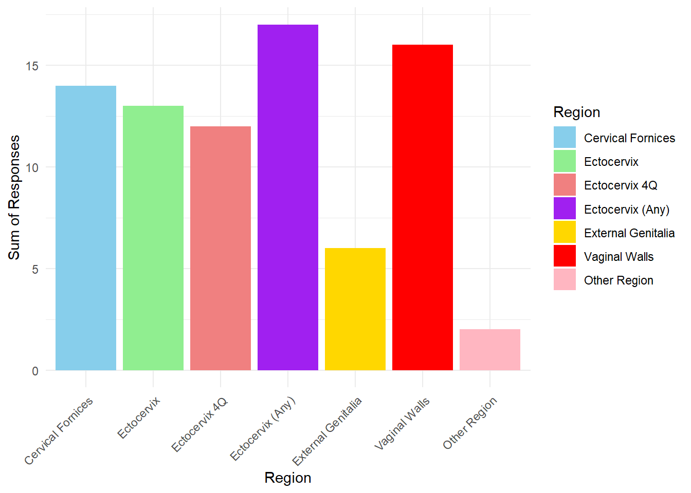
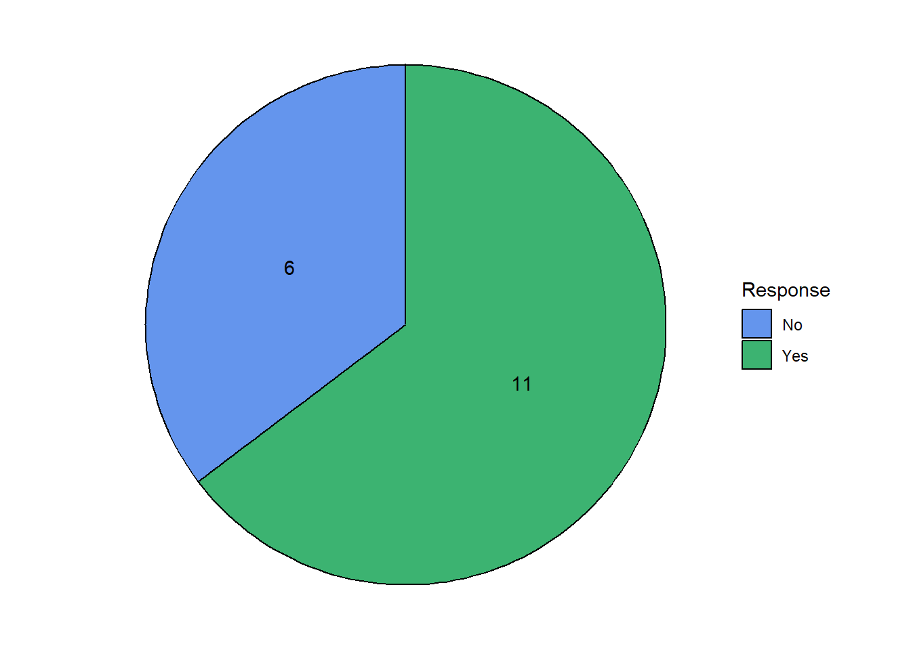
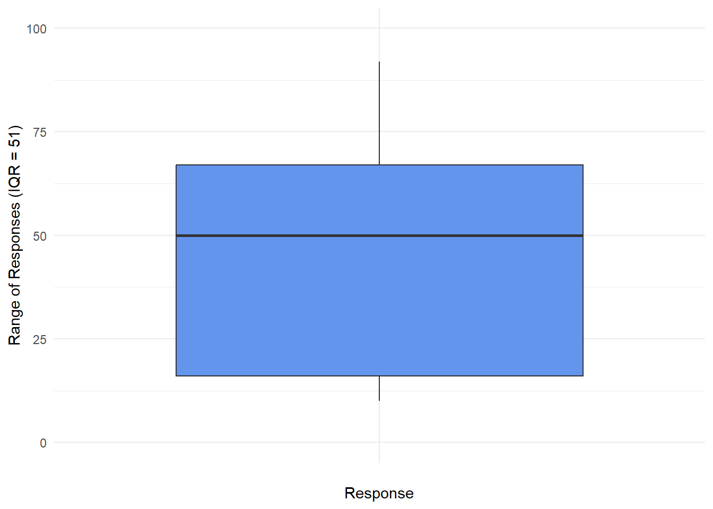
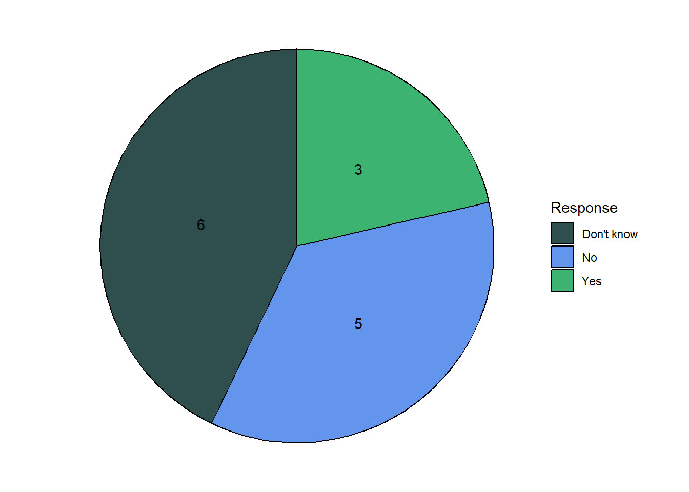
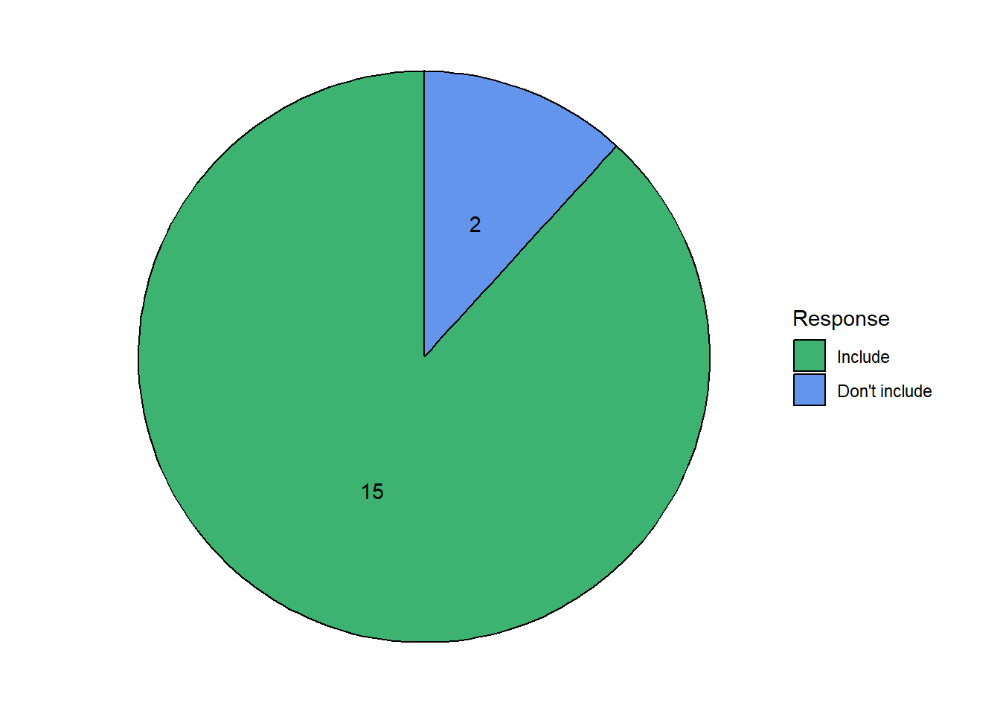
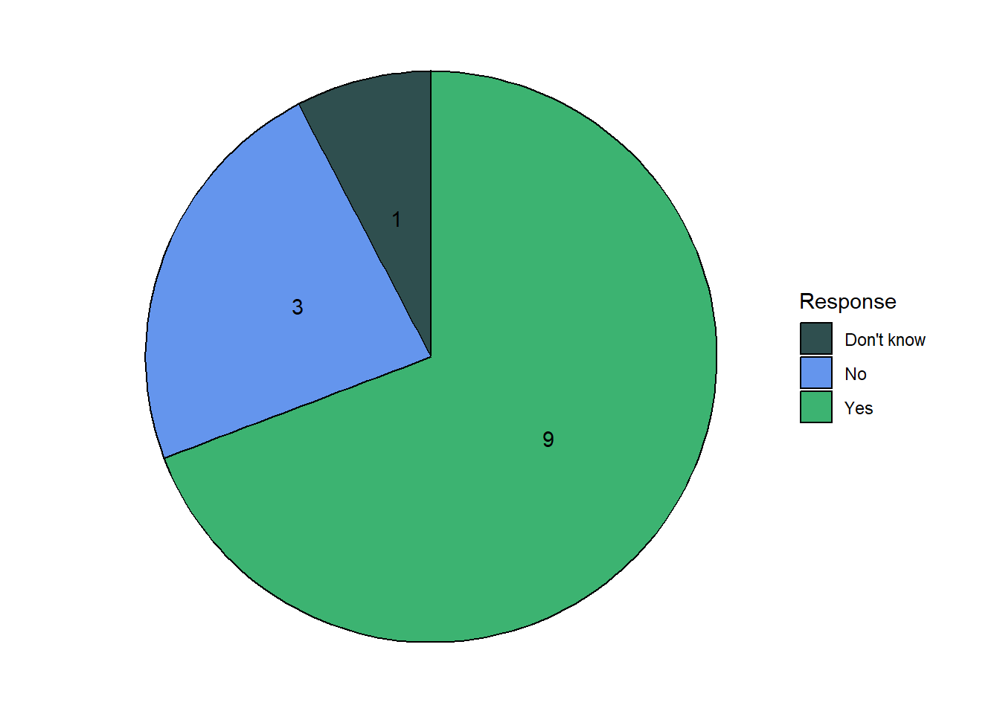
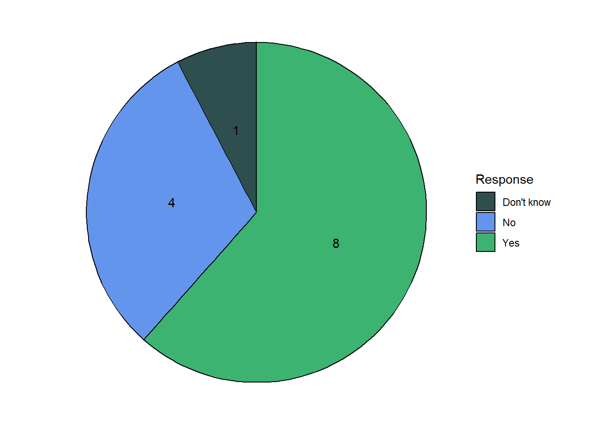
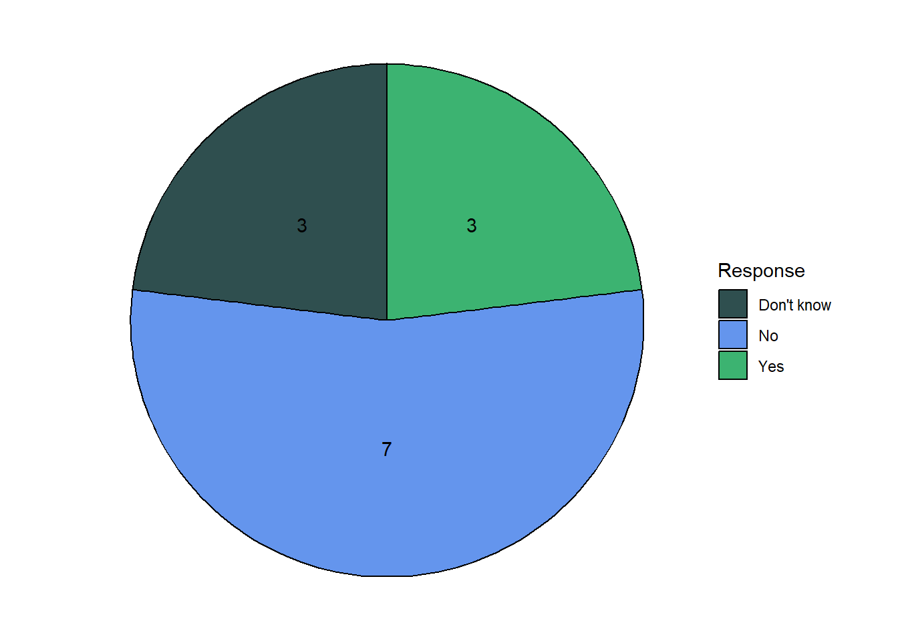
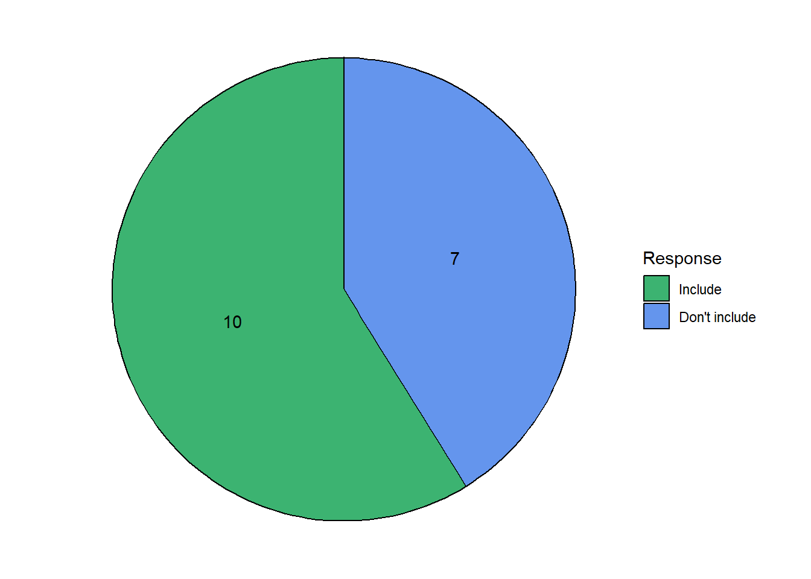
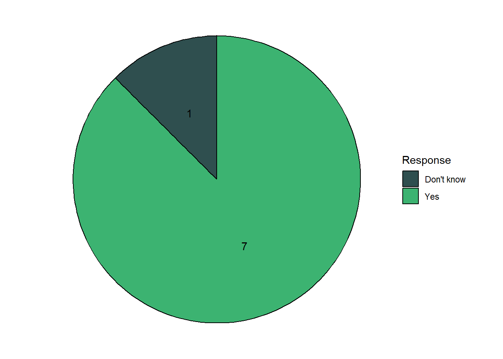

Round One Results: A scoping Delphi study for the co-development of a clinical visual grading system for female genital schistosomiasis
1.0 Current methods
1.1 Have you ever used any kind of standardised or structured clinical grading system for assessing FGS?
1.2 Description of the current grading system used:
Themes in the responses:
Forms created for an individual study (e.g. MAPFGS, DUALSAVE)
Cervical cancer/cervical lesion scoring system (The Swede Score)
WHO pocket Atlas
Digital grid (Qubifier)
1.3 For what purposes did you use the clinical grading system?
Themes in the responses:
Data collection and reference for lesion location and type
To grade lesions as being normal or CIN
For image review across a multi-site study
For identification, diagnostics and management of FGS
Assessing lesion proportion
1.4 Which regions are regularly included in the images you review?

Other:
- “The fornix”
- “Any abnormalities that was suspicious and needed medical attention was captured to help the woman”.
Current methods summary
At present, just over half of participants had some form of standardised or structured system they used when assessing cervical images. No two participants described the same system, indicating that there is no standardisation between reviewers in current practice. Two of the responses (the MAPFGS protocol and the Qubifier) have elements of clinical grading scales. The MAPFGS study is using a numeric scale developed specifically for the study, and the Qubifier measures cervical lesion proportion.
The main uses for the grading system involved standardising data collection (particularly tracking lesion location and extent), diagnosing FGS, screening (as part of a research study), and quantifying proportion.
The majority of participants responded that the images they review regularly include the ectocervix (either as a whole or in quadrants), cervical fornices, and vaginal walls. Five participants responded that they also include the external genitalia for review.
2.0 The Healthy Cervix
2.1 Recurring themes:
Pink (most common response)
- Lighter in colour when post-menopausal
Surface
Uniform/homogeneous
Firm
Smooth
Shape
Changes during life time/pregnancy
Round/oval
Absence of:
Contact bleeding
Inflammation
Lesions
Abnormal discharge
STI signs
Discolouration
Abnormal smell
Aceto white abnormalities
2.2 Summary:
The most common response to a healthy cervix was the presence of a uniform/homogeneous pink colour, smooth surface and round shape (which can change over the course of a lifetime). The healthy cervix was also characterised by the absence of several factors (including lesions, inflammation, abnormal discharge and abnormal smell).
3.0 Sensitivity and specificity of visual diagnostics
3.1 As you may be aware, a person can be FGS-positive but not display any visual signs of FGS. Furthermore, some lesions can be difficult to identify. This could lead to an incorrect diagnosis.
Imagine you have been given 100 colposcope images to review from only FGS-POSITIVE patients. Please assume that all cases are a TRUE POSITIVE. In how many images do you believe you would be able to identify one or more clinical signs of FGS?
3.2 As you may know, other findings in the cervix and vaginal canal, whether abnormal or benign, can resemble FGS. This similarity can result in an incorrect or inconclusive FGS diagnosis.
Imagine you have been given 100 colposcope images from only FGS-NEGATIVE patients. Please assume that all cases are a TRUE NEGATIVE. In how many images do you believe one or more clinical signs that resemble FGS could still be identified?
3.3 Sensitivity and specificity summary
Participants were given two hypothetical scenarios. In the first scenario, they were asked how many of the true positive cases they would expect to show visual signs of FGS. The median response was 72 (IQR = 40). This indicates that experts believe they would see visual signs of FGS in the majority of positive cases, but may still miss a large proportion.
In the second scenario, participants were asked how many images they still believed would have visual signs of FGS despite all images being from 100 TRUE NEGATIVE cases. The median response was 27 (IQR = 53).
In both scenarios, the high IQR indicates a high degree of variability.
4.0 Clinical grading system use cases
4.1 In your opinion, is a SIMPLIFIED FGS clinical grading system needed?
When referring to this, we mean a clinical grading system that can be used quickly at the point-of-care in a field clinic setting.
All participants responded that they do believe that a SIMPLIFIED clinical grading system is needed.
4.1.1 Why is it needed?
“Simplified clinical grading system will ease the workload of the caregivers, who are, in general nurses and midwives, who receive the women in consultation in the regions where FGS is hyperendemic”
“Many of these women/ girls are from rural / poor settings, they can’t afford to come back to the clinic for follow-up investigations. Therefore it’s important to simplify this to the point that a nurse/ medical officer can use it. It has to be cheap, user friendly etc..”
“that would enable use at the lowest point in the health system, e.g health centre as it is usually nursing or midwife technicians providing care in these setting, i.e. for most LMICs.”
“Help us to diagnose and offer treatment as soon as possible and help us to avoid having different opinions about one image seen by different people.”
“It will help for the follow-up(s) to identify if the lesion(s) is/are at the same section or there is new lesion in other section that were lesion(s) free.”
“It would be more acceptable by field workers and allow more individuals to access the service.”
“To avoid treatment delays and missing out positive images,easy in making decisions,and to maintain the standards”
“A simplified clinical grading system could help clinicians assess the likelihood of an FGS diagnosis. Potentially also whether to offer treatment in the form of praziquantel (PZQ). However, if a woman lives/comes from an area with possible schistosomiasis and has water exposure, I would ideally recommend PZQ treatment regardless of what signs of FGS are present. Furthermore, PZQ treatment does not seem to be efficient in treating fx cervical lesions associated with FGS. A clinical grading system might not have big implications for diagnosis and treatment right now. Perhaps if/when other treatment (fx local treatment) are identified a clinical grading system may become more relevant in the clinical setting. A clinical grading system may be very beneficial in terms of research in FGS. It may help provide a a common language to describe and discuss FGS among researchers, as well as clinicians.”
“To check for severity of FGS”
“It is needed at the point of care a field clinic setting for ease of use in limited Resources settings, for quick and accurate diagnosis, improved accessibility, standardization of care, time internation, enhanced patient education, support for public and healthy data collection as well as facilitating training and awareness.”
“A more simplified one is needed, atleast something that can make the examiner make a specific diagnosis feature”
“I think it is required because sometimes at a point of clinical need, one can receive care as required, which helps to be highly suspicious of the problem.”
“In some low resource settings, visual diagnosis, though imperfect is the only diagnostic available. While other high sensitivity and high specificity diagnostics should be strongly prioritized, if there is no other option, a simplified FGS clinical grading system could have utility where there are truly no other options.”
“Clinicians have an infinite number of patients to review at any given time, a simplified approach is critical to make their work easier”
4.2 In your opinion, is an EXTENDED FGS clinical grading system needed?
This would be a more detailed version of the simplified system and would be used to comprehensively characterise clinical signs using colposcope images.

4.2.1 Why is it needed?
“To lessen the workload of the caregivers in the region with hyperendemicity if FGS”
“For cases that could be referred to higher centres and for teaching purposes e.g at postgraduate level.”
“All genital tract might be affected by FGS”
“This would allow a more detailed examination of the genitalia, and less likely to have false positive results. This would, in turn, minimize unnecessary interventions”
“To have a standard way of diagnosing country wide,or world wide,”
“I believe an extended clinical grading system is vital to research and better a understanding of FGS.”
“Extended clinical grading system is needed in certain contexts to improve the accuracy of diagnosis, provide a comprehensive understanding of the disease and enhance treatment and research effort. These are the reasons why it may be necessary: For research purposes, improved diagnosis of typical presentation, tailored treatment approaches, monitoring and evaluation, training for specialities, support for control programs and focus on reproductive health.”
“It’s needed to boost our confidence diagnosis of FGS. When it’s a positive, it’s a positive no doubt about it”
“Hence this will be a more detailed version of the simplified one and hence will be comprehensive to characterized details, think will capture many things.”
“In clinical studies, visual diagnosis, though imperfect, is often used. While other high sensitivity and high specificity diagnostics should also be performed to ascertain a FGS diagnosis, an extended clinical grading system would have a role in standardizing clinical findings across studies (what counts as a GSP, what are the criteria for HYSP, etc), thus improving confidence in visual FGS diagnoses and allowing improved study of the natural history of FGS diagnosed visually.”
“To make colposcopic examination mandatory”
4.2.2 Why is it NOT needed?
“It might give more precise findings, however it won’t be convenient in other settings. There might be challenges implementing it as it might require training.”
“This could be interesting in research settings but not necessary to help the people with FGS. As far as I know, it doesn’t change the treatment, whether its severe or mild case. The initial treatment is the same. Also the colposcope isn’t the greatest diagnostic tool when it comes to asses how much of the internal genital tract is affected by fgs. This is quite complicated.”
“Because a simplified version would be enough”
“It will complicate the work of the clinician”
“In research settings yes, in routine clinical exam, the simpler it is the easier the clinical decision is made and finally appropriate treatment given”
4.3 If we were to create an FGS clinical grading system, which of the following cervical regions should be included? For the purpose of the grading system, this would be considered the ‘region of interest’
4.3.1 Other regions include:
Internal genital tract: fallopian tube, ovaries, uterus
4.4 Use cases summary
All experts agreed that a simplified clinical grading system is needed. A recurring theme in the responses was that something is needed at the point-of-care for rapid decision making, as many women in resource constrained settings are not able to return for a diagnosis. Other recurring themes in response to why a simplified system is needed include the need to simplify the healthcare workers workload, and to assist in tracking lesions for followup.
The majority of experts agreed that an EXTENDED clinical grading system is needed. Multiple experts suggested that this extended system, while potentially not appropriate for a point-of-care tool, would be useful in a research setting. Other suggested reasons for using it were to supplement the simplified system to increase confidence in a diagnosis and provide a more detailed and comprehensive characterisation of the disease.
Those who said an extended system was not needed suggested it would be confusing and overly complicated for clinicians, that it is unlikely to impact treatment outcomes, and that training on a complex grading system might cause issues with implementation.
5.0 What should be included?
5.1 Homogenous sandy patches
5.1.1 Should homogeneous sandy patches be included in the clinical grading system?

5.1.2 Imagine you were provided with 100 colposcope images with confirmed POSITIVE FGS. Approximately how many do you think would have lesions that look like HOMOGENOUS SANDY PATCHES?
5.1.3 Imagine you were provided with 100 colposcope images with confirmed NEGATIVE FGS. Approximately how many do you think would have lesions that look like HOMOGENOUS SANDY PATCHES?
5.1.4 In your opinion, does the EXTENT of the HOMOGENOUS SANDY PATCHES matter when reviewing images for FGS?

5.1.5 In your opinion, does the LOCATION of the HOMOGENOUS SANDY PATCHES matter when reviewing images for FGS?
5.1.6 In your opinion, does the INTENSITY of the HOMOGENOUS SANDY PATCHES matter when reviewing images for FGS?

5.1.7 In your opinion, does the SHAPE/OUTLINE of the HOMOGENOUS SANDY PATCHES matter when reviewing images for FGS?
5.1.8 Additional comments regarding homogenous sandy patches:
“We know very little about these patches, what they mean clinically.”
“Further research is required, but homogenous sandy patches may represent more chronic aspect of FGS”.
“The inclusion of homologous sandy patches as a clinical diagnostics maker is essential for effective identification of FGs , guiding appropriate treatment and prevention efforts”.
“In my review experiences, I saw many grain sand patches as (calcified eggs) rather than Homogeneous yellowish sand patches which are matured eggs, and still the inflammatory process is ongoing the active infection”.
“Some other RTIs may have homogenous yellow sandy patch as one of the clinical presentation on visual exam”.
5.1.9 Homogenous Sandy Patches Summary
In round one, 15/17 experts agreed that homogenous sandy patches should be included in an FGS clinical grading system. According to these results, experts believe that homogenous sandy patches can be identified in approximately 50% of true positive cases while lesions that appear similar to homogenous sandy patches could be identified in ~20% (IQR 23) of cases without FGS.
Of those experts that believed homogenous sandy patches should be included, the majority believed that the extent, location and intensity of the patches matter when reviewing images for FGS.
5.2 Grainy sandy patches
5.2.1 Imagine you were provided with 100 colposcope images with confirmed POSITIVE FGS. Approximately how many do you think would have lesions that look like GRAINY SANDY PATCHES?
5.2.2 If you were provided with 100 colposcope images with confirmed NEGATIVE FGS. Approximately how many do you think would have lesions that look like GRAINY SANDY PATCHES?
5.2.3 In your opinion, does the EXTENT of the GRAINY SANDY PATCHES matter when reviewing images for FGS?
5.2.4 In your opinion, does the LOCATION of the GRAINY SANDY PATCHES matter when reviewing images for FGS?
5.2.5 In your opinion, does the INTENSITY of the GRAINY SANDY PATCHES matter when reviewing images for FGS?
5.2.6 In your opinion, does the SHAPE/OUTLINE of the HOMOGENOUS SANDY PATCHES matter when reviewing images for FGS?
5.2.7 Additional comments regarding grainy sandy patches:
“Grainy Sandy Patches might be single grains that resembles rice grains, or a cluster”.
“We know very little about these patches, their clinical relevance”.
“The inclusion of grainy sandy patches in colposcopy imaged is crucial for diagnosis and management of FGs aiding in both clinicians and pathologist in recognizing this condition and differentiatting it from other cervical disorders”.
“Grainy sandy patches are not easy to diagnose because one can mistake them for homogeneous sandy patches”.
“Grain sand patches are sometimes confused with Trichomoniasis these two lesions are different structurally. These lesions are due to calcified eggs and are most commonly found during examinations. Sometimes they are missed clinically if imbedded deeply in the tissue”.
5.2.8 Grainy sandy patches summary
The majority of experts (16/17) agreed that grainy sandy patches should be included in a clinical grading system. The experts believed that grainy sandy patches could be identified in just under 50% of cases, however the response to this question varied significantly (IQR = 47). The results indicate that experts view grainy sandy patches as a specific indicator of FGS, suggesting that they would appear in around 5% (IQR = 13) of images of FGS negative women.
The experts believed that the extent and intensity of the grainy sandy patches matter when reviewing images for FGS.
5.3 Abnormal vessels

5.3.1 Imagine you were provided with 100 colposcope images with confirmed POSITIVE FGS. Approximately how many do you think would have lesions that look like ABNORMAL VESSELS?

5.3.2 If you were provided with 100 colposcope images with confirmed NEGATIVE FGS. Approximately how many do you think would have lesions that look like ABNORMAL VESSELS?
5.3.3 In your opinion, does the EXTENT of the ABNORMAL VESSELS matter when reviewing images for FGS?
5.3.4 In your opinion, does the LOCATION of the ABNORMAL VESSELS matter when reviewing images for FGS?

5.3.5 In your opinion, does the INTENSITY of the ABNORMAL VESSELS matter when reviewing images for FGS?
5.3.6 In your opinion, does the SHAPE/OUTLINE of the ABNORMAL VESSELS matter when reviewing images for FGS?
5.3.7 Additional comments regarding abnormal vessels:
“They can be circular, semi-circular or of uneven caliber”.
“Abnormal vessels are not very specific to FGS. Maybe the type of abnormal vessels fx circular or branched vessels surrounding grains can be specified to make the category more relevant for the FGS diagnosis”.
“The vascular changes can help clinicians asses the severity and chronicity of the infection, distinguishing FGs from other conditions and guide treatment and monitoring decisions”.
“Abnormal vessels are the one type of grading described by WHO they should be included. but in my experience, they are rarely found”.
“In my opinion especially blood vessels that are not related to the squamocolumnar junction area and the endocervix are more likely to be cases of FGS”.
“For a long time Abnormal blood vessels in the cervix have been associated with HPV infection.Precancerous changes, we are now seeing this in women who are negative for cervical cancer. In depth review if this clinical scenario is key”.
5.4 Rubbery Papules

5.4.1 Imagine you were provided with 100 colposcope images with confirmed POSITIVE FGS. Approximately how many do you think would have lesions that look like RUBBERY PAPULES?
5.4.2 If you were provided with 100 colposcope images with confirmed NEGATIVE FGS. Approximately how many do you think would have lesions that look like RUBBERY PAPULES?
5.4.3 In your opinion, does the EXTENT of the RUBBERY PAPULES matter when reviewing images for FGS?
5.4.4 In your opinion, does the LOCATION of the RUBBERY PAPULES matter when reviewing images for FGS?

5.4.5 In your opinion, does the INTENSITY of the RUBBERY PAPULES matter when reviewing images for FGS?

5.4.6 In your opinion, does the SHAPE/OUTLINE of the RUBBERY PAPULES matter when reviewing images for FGS?

5.4.7 Additional comments regarding rubbery papules:
“They are beige, smooth papules. they are firm and spherical in shape”.
“I have never seen ruppery papule with the naked eye. I have only seen it on images. Could be a rare occurring finding?, or something else? Or occur only when there is another infection? Maybe certains strains cause this? Etc…”.
“Rubbery papules have only been documented in Madagascar. I believe they have been seen in Eswatini as well. Hence rubbery papules usefulness may depend on geography”.
“It is useful particularly in assessing advanced cases of the diseases. There appearance offers additional insight into disease progression making it easier for clinicians to diagnosize chronic FGs and choose appropriate management protocols”.
“They should be included but they are rarely found during clinical assessment”.
“Majority of healthcare workers are likely to visualise rubbery papule unlike the yellow or sandy grainy patches”.
5.4.8 Rubbery Papules Summary
The majority of experts (15/17) agreed that rubbery papules should be included in a clinical grading system. Experts appear to believe that rubbery papules are infrequent and occur in approximately 20% of FGS positive cases (IQR = 16). They also believe that rubbery papules are very specific to FGS, appearing in less than 10% of images from FGS negative women (IQR = 7). The additional comments suggest that, while they might be easier to spot when they are present compared to other lesion types, few experts have seen them in-person. Geography, co-infection and differing species were all suggested as reasons why they are spotted rarely. The majority of experts believe that the extent and intensity of the rubbery papules matter while reviewing images for FGS.
5.5 Contact Bleeding

5.5.1 Imagine you were provided with 100 colposcope images with confirmed POSITIVE FGS. Approximately how many do you think would have CONTACT BLEEDING?
5.5.2 If you were provided with 100 colposcope images with confirmed NEGATIVE FGS. Approximately how many do you think would have contact bleeding?
5.5.3 In your opinion, does the EXTENT of the CONTACT BLEEDING matter when reviewing images for FGS?

5.5.4 In your opinion, does the LOCATION of the CONTACT BLEEDING matter when reviewing images for FGS?

5.5.5 In your opinion, does the INTENSITY of the CONTACT BLEEDING matter when reviewing images for FGS?
5.5.6 In your opinion, does the SHAPE/OUTLINE of the CONTACT BLEEDING matter when reviewing images for FGS?

5.5.7 Additional comments regarding contact bleeding:
“Contact bleeding is often at the same localization with the lesion”
“Contact bleeding is not very specific to FGS, but may help determine how severe the FGS is (how fragile the mucosa is because of FGS)”.
“Bleeding obscures visualization of FGS”.
“In my opinion, it is the abnormal vessels suspected of being FGS that bleed due to trauma or fragility of the wall or even the areas inflamed by the presence of bilharzia eggs”.
“Contact bleeding indicates loss of mucosal integrity due to inflammation, infection, cancer, further evaluation is critical”.
5.5.8 Contact bleeding summary
The majority of experts (15/17) believe that contact bleeding should be included in a clinical grading system. There was a wide range of responses regarding how many FGS positive women experts believe would have contact bleeding (median = 27.5, IQR = 49). Experts responded that the extent, location and intensity of the contact bleeding all matter when reviewing images for FGS. In the additional responses, experts suggested that contact bleeding may be as a result or coincide with other lesions and may be a useful indication of severity.
5.6 Abnormal Discharge

5.6.1 Imagine you were provided with 100 colposcope images with confirmed POSITIVE FGS. Approximately how many do you think would have ABNORMAL DISCHARGE?
5.6.2 If you were provided with 100 colposcope images with confirmed NEGATIVE FGS. Approximately how many do you think would have contact bleeding?
5.6.3 In your opinion, does the EXTENT of the ABNORMAL DISCHARGE matter when reviewing images for FGS?
5.6.4 In your opinion, does the LOCATION of the ABNORMAL DISCHARGE matter when reviewing images for FGS?

5.6.5 In your opinion, does the INTENSITY of the ABNORMAL DISCHARGE matter when reviewing images for FGS?

5.6.6 Additional comments regarding abnormal discharge:
“The color, consistency and smell of the discharge”.
“The importance of abnormal discharge depends a lot on which other STIs are present in the same area and whether they can be diagnosed”.
5.6.7 Abnormal discharge summary
The majority of experts (10/17) responded that they do believe that abnormal discharge should be included in the clinical grading system. They responded that they believe abnormal discharge would be present in a high number of FGS positive cases (median = 60, IQR = 38), but less than 25% of negative cases (IQR = 26). Experts responded that they believe that the extent, intensity and location of the abnormal discharge all matter when reviewing images for FGS.
5.8 External genital ulcers
6.0 Symptoms and characteristics
6.1 Should the following physical symptoms/characteristics be included in a clinical grading system?
6.2 Symptoms and characteristics additional comments
“If they have had any recent water contact (e.g. River water, lake or dam)”.
“Water contact ( very important) in my opinion, only this question can be used to diagnose. If we know that specific river is positive, those using that river is definitely infected”.
“Water exposure in schistosomiasis endemic area. Blood in urine”.
“Abnormal vagina discharge, four-smelling vagina discharge”.
“It’s tricky - probably the more symptoms you include, likely the higher sensitivity. But, potentially the specificity would be lower. If the goal was to have as sensitive a diagnostic possible (so, used to screen patients prior to more invasive or more expensive diagnostics) then we’d probably want to include as many findings as possible. In that case, perhaps then I would include spontaneous abortion and dysuria. I’m not sure how strongly associated they are, but if they improved the sensitivity of the tool - I wouldn’t complain about including them”.
7.0 Potential complicating factors
When reviewing images for FGS, certain gynecological conditions or symptoms may make it more challenging to visualize and identify FGS. For each condition or symptom listed below, please use the slider to rate, on a scale of 1 to 10, the extent to which it affects your ability to detect FGS lesions.
7.1 Cloudy discharge
7.2 Strawberry cervix (visual signs of trichomonas)
7.3 Visual signs of cervical dysplasia consistent with HPV or cervical cancer
7.4 Contact bleeding
7.5 Cervical bruising
7.6 Menstrual blood
7.7 Cervical scarring
7.8 Genital warts

7.9 Multimorbitity (visual signs of more than one disease on the cervix/vaginal canal)
7.10 Complicating factors additional comments
- “For the above questions, cloudy discharge, menstrual blood, contact bleeding - if its on images then it will be difficult to look for lesions. But if its during an investigation, then it’s not a problem, we just wipe it off and look for the lesions. For our studies, we would also always capture an additional image after wiping off any discharge/ blood etc.. therefore it really depends.”
8.0 Additional comments
“Years living in a s. haematobium endemic area. Childhood contact to water in a s. haematobium endemic area. Current water exposure (fx work) in a s. haematobium endemic area. Potentially relatives/ friends with signs of schistosomiasis (fx blood in urine).”
“If images are blurred, there is no good light while taking images”